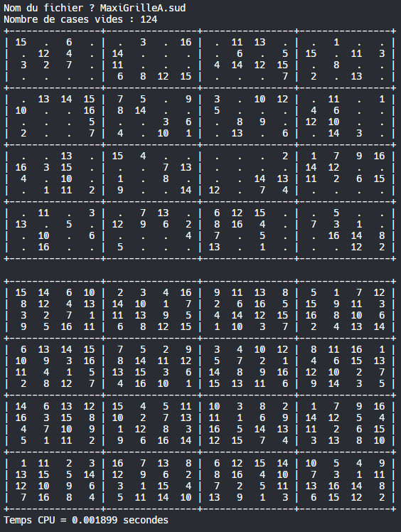

Projets de résolution
Solveur de Sudoku (cliquer pour dérouler)
Ce projet consiste à développer un solveur de Sudoku en langage C. Le programme permet de charger, afficher, et résoudre une grille de Sudoku.
Langages et outils utilisés
- Langage C : Pour le développement du programme.
- Doxygen : Pour la génération de la documentation du code.
Description du programme
Le programme utilise les concepts fondamentaux de la programmation en C, notamment :
- Définition de constantes et de types personnalisés
- Utilisation de tableaux multidimensionnels pour représenter la grille de Sudoku
- Fonctions pour charger, afficher, et vérifier la validité des valeurs insérées dans la grille
- Utilisation de la bibliothèque standard pour la gestion des entrées/sorties
Représentation
Lien vers le projet complet
Solveur du problème des huit reines (cliquer pour dérouler)
Ce projet consiste à développer un solveur automatique du problème des huit reines en Python. Le programme utilise deux algorithmes : le backtracking et une méthode basée sur les symétries, rotations et réflexions.
Langages et outils utilisés
- Python : Pour le développement du programme.
Description du programme
Le programme utilise les concepts fondamentaux de la programmation en Python, notamment :
- Utilisation de fonctions pour vérifier les contraintes du problème des huit reines
- Méthode de backtracking pour trouver toutes les solutions possibles
- Algorithme exploitant les symétries, rotations et réflexions pour optimiser la recherche de solutions